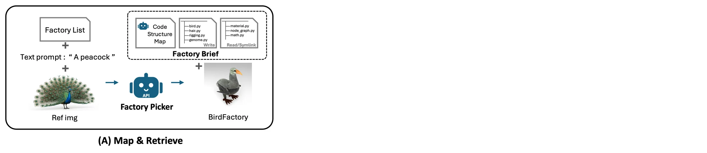
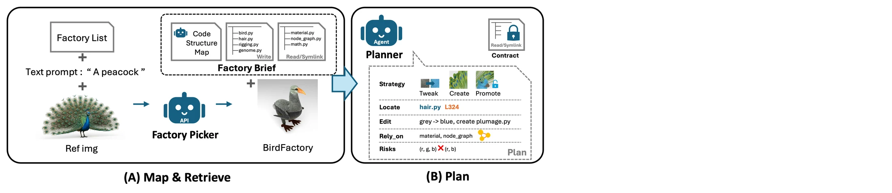
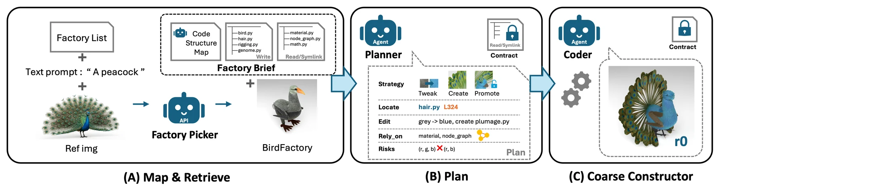
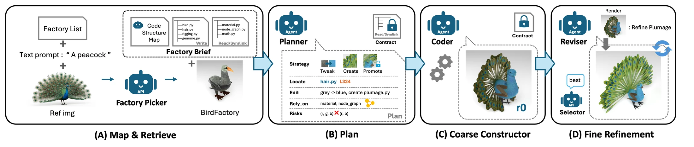
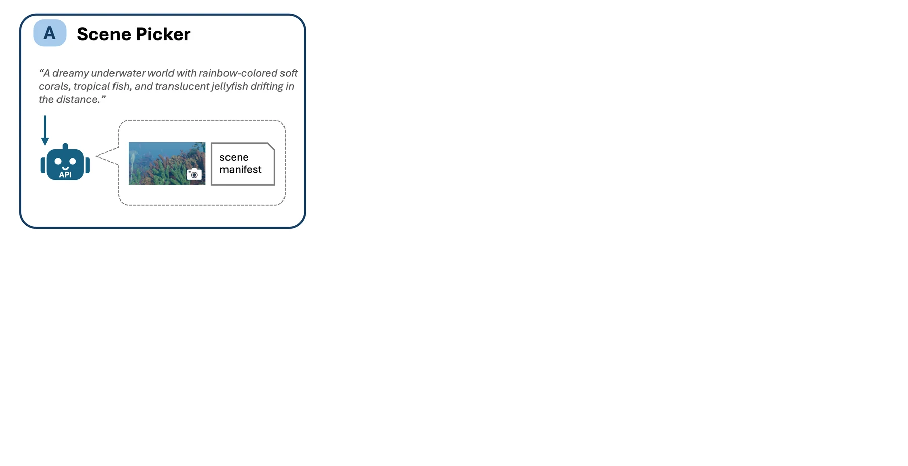
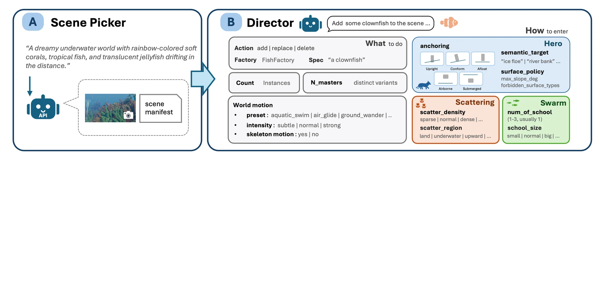
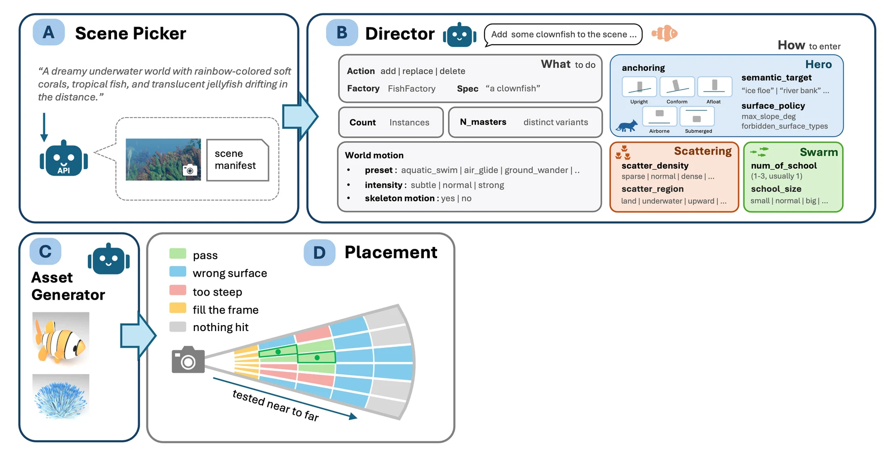
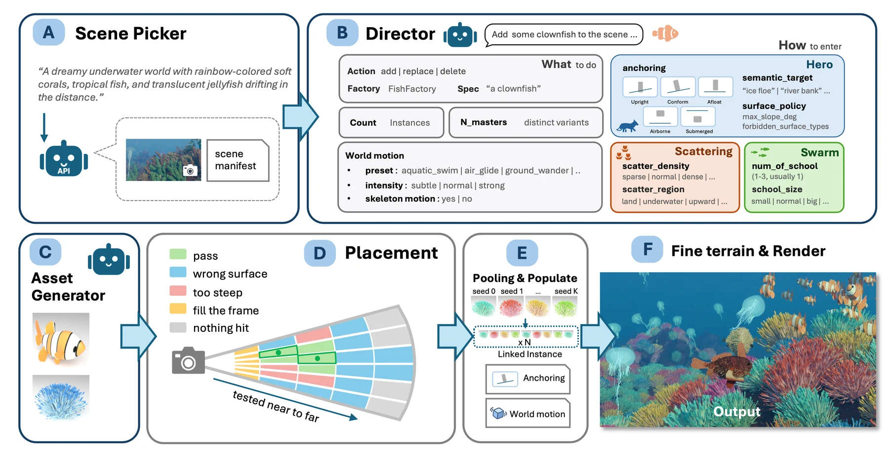

Open-Ended Photorealistic 3D Worlds through Procedural Generation
1National Yang Ming Chiao Tung University 2National Taiwan University 3Alaya Lab
Open-Ended Photorealistic 3D Worlds through Procedural Generation
1National Yang Ming Chiao Tung University 2National Taiwan University 3Alaya Lab
The world is a program.
Change anything, any time.
Generation beyond the predefined.
Explore as far as you like.
Change the seeds, get a forest.
Variety that scales to a whole landscape.
Move across the frame. Left is the Infinigen base scene, right is the generated world.
Coded into this scene
Baselines
Most VLM-written 3D code composes simple primitives with boolean operations, which caps how detailed an asset can get. InfiniDream builds on an existing photorealistic procedural library and extends it beyond its predefined assets.
The same program, re-seeded, gives a large scene all the variety it needs.
Handing a VLM the entire Infinigen codebase leads to imprecise editing. SCE instead extracts the key code structures and explicit editing constraints, turning a large procedural codebase into a manageable editing space.


VLM-generated Blender code from scratch produces simplified geometry. Shapes are assembled from primitives and boolean operations, which makes photorealism hard to reach.
Infinigen reaches photorealism through procedural asset factories that were each handcrafted by a person. Its generative capabilities stay bounded by predefined asset categories and procedural rules, so a genuinely new asset type cannot be asked for.
A VLM agent harness with full access to all 833 files and 257,301 lines has every capability in reach. Even so, providing the entire codebase directly leads to imprecise editing.
Symbolically Constrained Editing narrows the same codebase to the handful of modules that actually decide the shape, found per asset by depth-limited dependency analysis and handed over with a Code Structure Map and read-only links to the shared algorithms. Existing procedural algorithms are reused under explicit constraints, so editability and seed-based diversity are preserved.
SCE generates novel, photorealistic procedural assets with rich geometric details beyond predefined factories, while preserving editability and seed-based diversity.




From a text description and an optional reference image, the closest Infinigen factory is retrieved and wrapped in a Factory Brief: a map of the code’s structure, an Editable Surface of asset-specific modules found by depth-limited dependency analysis, and read-only symlinks to the shared low-level algorithms. Those boundaries are what stop editing from reaching the procedural machinery underneath.
The Planner writes a structured Editing Plan. Strategy picks between Tweak (adjust existing parameters and logic), Create (add new procedural functions) and Promote (extend editing rights into protected modules). Locate points at the exact file and line, Edit states what changes there, Rely_on lists the shared algorithms it may read, and Risks flags what could break, such as a changed parameter count.
The Coder executes that plan inside the declared boundaries, keeping the factory’s entry points and function signatures intact so the population pipeline and seed control still work. It widens sampling ranges rather than pinning parameters, so seed-dependent variation survives the edit.
The Reviser renders the result, compares it against the description and reference image, and patches the gaps in geometry, material and detail with further code edits inside the same boundaries. A Selector keeps the best candidate across iterations.
An end-to-end text-to-world framework combining semantic scene planning with deterministic frustum-guided grid placement, to generate large-scale, editable 3D worlds.




A text prompt goes in, and the Scene Picker retrieves the Infinigen base scene that best fits it as a starting point.
The Director turns the prompt into a structured Scene Plan of add, replace and delete operations, asset specs, and semantic placement constraints: Hero, Scattering or Swarm placement, seven anchoring types, a surface policy, instance counts and motion. Every continuous geometric decision is left to deterministic placement.
Those constraints become 3D candidates with no extra VLM call: the camera’s image plane is discretised into a grid and candidates are generated along its rays, by surface intersection for grounded objects and at depth intervals for airborne or submerged ones. Each candidate passes five deterministic checks: visibility, collision against motion swept envelopes, inter-instance spacing, surface policy, and projected-area band. The nearest survivor wins. Because the search runs near-to-far under projected-area bounds, size-aware placement falls out for free: small objects land close, large ones further away.
Assets are pooled before they are populated: the Director’s N instances are built from only K procedural prototypes and linked-duplicated, cutting expensive constructions from N to K while keeping seed-level variety. The pooled assets are then placed by anchoring mode, merged with Infinigen’s fine terrain pipeline, animated from the same motion spec that drove collision checking, and rendered.
@misc{infinidream2026,
title = {InfiniDream: Open-Ended Photorealistic 3D Worlds
through Procedural Generation},
author = {Huang, Yi-Chuan and Chien, Hao-Jen and Huang, Zheng-Hui
and Liu, Yu-Lun and Zhang, Kaipeng and Wang, Zhixiang},
year = {2026}
}